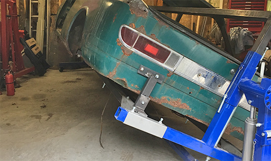
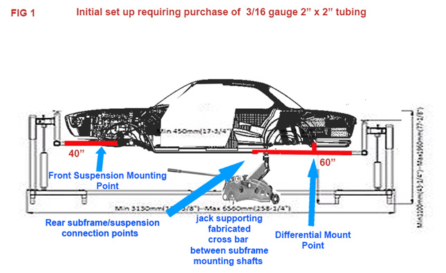
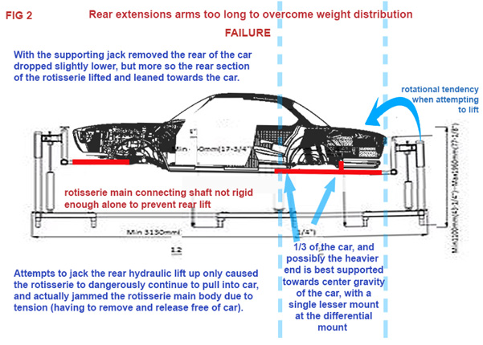
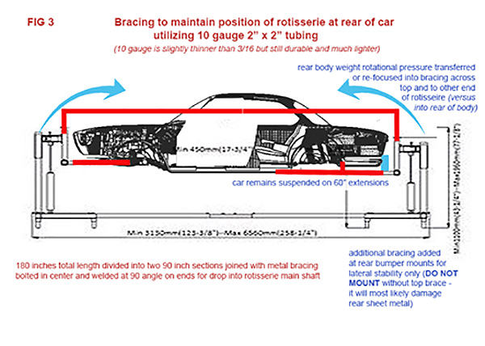
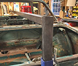
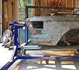
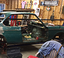

August 2017- Rotisserie Finalized
Car is up! But...
 Last we left off over a year ago... "I pulled out all of the supporting jacks and with some fanfare, the car was now resting on the rotisserie. My main goal at this point is just to be able to move the car around and get it out of the way until I finished another project." I enjoy being able to push the 66 BMW 2000c around with ease on the rotisserie, but as I attempt to elevate it with the hydraulics, I am enountering problems.
Last we left off over a year ago... "I pulled out all of the supporting jacks and with some fanfare, the car was now resting on the rotisserie. My main goal at this point is just to be able to move the car around and get it out of the way until I finished another project." I enjoy being able to push the 66 BMW 2000c around with ease on the rotisserie, but as I attempt to elevate it with the hydraulics, I am enountering problems.

Weird Center of Gravity Problem
When I attempted to eventually elevate the car via the two massive hydraulic jacks on the CR-3000 at the front and the rear of the rotisserie, I discovered the front was elevating nicely, but the rear was not.
The more I attempted to elevate the rear, the more I noticed the CR-3000 was starting to lean forward and into the rear of the car. The rear of the car also was not really rising correctly. I figured the bottom cross piece bolted together between the front and the back of the CR-3000 would prevent this. In theory, it probably should, but with the 2000c there seemed to be just too much weight hanging out there. If I kept elevating, I could easily force the CR-3000 into the body at the trunk latch button.
It got so bad, that the CR's floating section jammed in its main frame. I had to un-do everything, support the car, and pull out the rear of the CR-3000 to relieve the pressure and let it align, so I could then lower it back down and start over.

Problem Solved! Brace Between Front and Back
I needed to ensure that the rear of the CR-3000 wouldn’t move by leveraging it off the front of the CR-3000. I noticed that some other guys did this by running a heavy bracing underneath. I was preparing to do this when my friend Tom Baruch, a veteran e9 restoration guru and engineer by training, noted the obvious. Why not brace across the top. I could utilize the open tubes of the CR-3000 and by welding 90 degree angles with one long center piece it might just work. I went back to the industrial metal supply guys and got two sections of 90 inch slightly lighter 40 gauge square steel tubing. I joined them in the middle with two heavy straps bolted in place.
I also braced the rear at the bumper mounts only for lateral movement. I would not use those braces without the top brace. It all worked! I jacked up the rear and the CR-3000 did not rise into the rear of the car, nor did the rear drop any.

 |
 |
 |
{kind=link}
{kind=link}
{kind=link}
Car Rises with Hydraulics and Rotates
After elevating at front and back, I was able to rotate the car with ease! Here is a video of the process and the first spin.